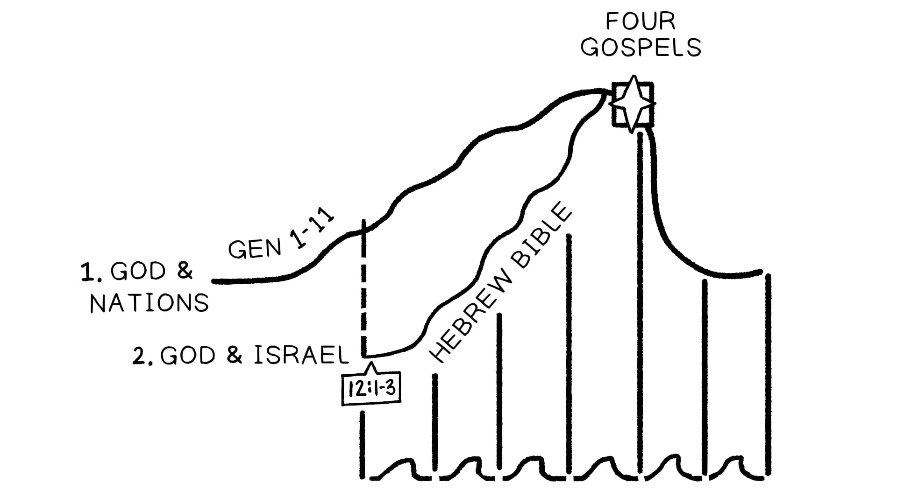

Sessão 20: Enredos e SubenredosSession 20: Plots and Subplots
Principais LiçõesKey Takeaways
Uma maneira pela qual a narrativa bíblica usa o enredo é através do embutimento de enredo, ou camadas de linhas de história trabalhando juntas para contar a história geral da Bíblia.One way biblical narrative uses plot is through plot embedding, or layers of storylines working together to tell the overall story of the Bible.
Narrativas individuais são enquadradas dentro de um contexto maior que lhes dá um significado que transcende os eventos individuais.Individual narratives are framed within a larger context that gives them a meaning that transcends the individual events.
A Bíblia Hebraica é sobre nossa necessidade do messias, e o Novo Testamento revela que Jesus é o Messias de que precisamos. Tanto Jesus quanto os apóstolos apelam à Bíblia Hebraica para revelar a verdadeira identidade de Jesus.The Hebrew Bible is about our need for the messiah, and the New Testament reveals that Jesus is the Messiah we need. Both Jesus and the apostles appeal to the Hebrew Bible to reveal Jesus’ true identity.
Enredos Dentro de Enredos Dentro de EnredosPlots Within Plots Within Plots
Toda a narrativa bíblica funciona como um complexo entrelaçamento de camadas de enredo. Cada subenredo contribui para o nível superior, e cada nível superior determina o significado último do subenredo.The entire biblical narrative works like a complex interweaving of plot layers. Each subplot contributes to the higher level, and each higher level determines the ultimate meaning of the subplot.
Nível de Enredo 1: Deus e as NaçõesPlot Level 1: God and the Nations
Gênesis 1-11 coloca a história em movimento.Genesis 1-11 sets the story in motion.
Humanos são instalados como imagens divinas para governar em nome de DeusHumans are installed as divine images to rule on God’s behalf
Humanos tolamente renunciam sua responsabilidade, e são exilados para a terra da morteHumans foolishly forfeit their responsibility, and they are exiled unto the land of death
Mas Deus promete levantar uma “semente” que vencerá o mal através da morteBut God promises to raise up a “seed” who will overcome evil through death
De fora do Éden a Babilônia (Gn. 4-11)From outside Eden to Babylon (Gen. 4-11)
Nível de Enredo 2: Deus e a Família de AbraãoPlot Level 2: God and Abraham’s Family
Gênesis 12 até o resto da Bíblia Hebraica conta a história de Deus e Israel.Genesis 12 through the rest of the Hebrew Bible tells the story of God and Israel.
A família de Abraão e a promessa da aliança (Gn. 12-50)Abraham’s family and the covenant promise (Gen. 12-50)
O êxodo (Êx. 1-18)The exodus (Exod. 1-18)
A aliança no Monte Sinai (Êx. 19-Nm. 10)The covenant at Mount Sinai (Exod. 19-Num. 10)
Peregrinações no deserto (Nm. 10-Dt. 34)Wilderness wanderings (Num. 10-Deut. 34)
Entrada na terra prometida (Js.)Entry to the promised land (Josh.)
A falha dos juízes (Jz.)The failure of the judges (Jud.)
A falha da monarquia (Sm.-Rs.)The failure of the monarchy (Sam.-Kgs.)
Retorno do exílio e esperanças não realizadas (Ed-Ne)Return from exile and unrealized hopes (Ezra-Neh.)
Níveis 1 e 2 se Combinam: Jesus e a Restauração do Reino de DeusPlot Levels 1 and 2 Combine: Jesus and the Restoration of God’s Reign
O Novo Testamento reúne ambos os níveis do enredo da Bíblia Hebraica. Jesus é tanto a imagem humana fiel que governa o mundo com Deus (nível de enredo 1) quanto o israelita fiel através de quem as promessas da aliança de Deus podem se espalhar para as nações (nível de enredo 2).The New Testament brings together both levels of the plot of the Hebrew Bible. Jesus is both the faithful human image that rules the world with God (plot level 1) and the faithful Israelite through whom God’s covenant promises can spread to the nations (plot level 2).
Nível de Enredo 3: O Enredo de Cada Narrativa BíblicaPlot Level 3: The Plot of Each Biblical Narrative
O enredo nos níveis 1 e 2 é levado adiante por um vasto número de narrativas mais curtas, cada uma com suas próprias linhas de enredo.The plot at levels 1 and 2 is carried along by a vast number of shorter narratives, each with their own plotlines.
Centenas de narrativas individuais compõem todos os grandes movimentos. Cada narrativa individual é enquadrada dentro de seu contexto de enredo maior. O significado último destas histórias individuais depende de sua colocação na história geral.Hundreds of individual narratives make up all of the larger movements. Every individual narrative is framed within its larger plot context. The ultimate meaning of these individual stories depends on their placement in the overall story.

A Linha de Enredo da Bíblia. Ilustração criada por Tim Mackie para BibleProject Classroom: Introdução à Bíblia Hebraica (2019).The Plotline of the Bible. Illustration created by Tim Mackie for BibleProject Classroom: Introduction to the Hebrew Bible (2019).
Pergunta para ReflexãoReflection Question
Como você resumiria a maneira pela qual a história da família de Abraão se relaciona com a história de toda a Bíblia Hebraica?How would you summarize the way that the story of Abraham’s family relates to the story of the whole Hebrew Bible?